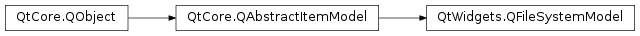

QFileSystemModel¶
Synopsis¶
Functions¶
- def
fileIcon(index) - def
fileInfo(index) - def
fileName(index) - def
filePath(index) - def
filter() - def
iconProvider() - def
index(path[, column=0]) - def
isDir(index) - def
isReadOnly() - def
lastModified(index) - def
mkdir(parent, name) - def
myComputer([role=Qt.DisplayRole]) - def
nameFilterDisables() - def
nameFilters() - def
remove(index) - def
resolveSymlinks() - def
rmdir(index) - def
rootDirectory() - def
rootPath() - def
setFilter(filters) - def
setIconProvider(provider) - def
setNameFilterDisables(enable) - def
setNameFilters(filters) - def
setReadOnly(enable) - def
setResolveSymlinks(enable) - def
setRootPath(path) - def
size(index) - def
type(index)
Signals¶
- def
directoryLoaded(path) - def
fileRenamed(path, oldName, newName) - def
rootPathChanged(newPath)
Detailed Description¶
The
PySide2.QtWidgets.QFileSystemModelclass provides a data model for the local filesystem.This class provides access to the local filesystem, providing functions for renaming and removing files and directories, and for creating new directories. In the simplest case, it can be used with a suitable display widget as part of a browser or filter.
PySide2.QtWidgets.QFileSystemModelcan be accessed using the standard interface provided byPySide2.QtCore.QAbstractItemModel, but it also provides some convenience functions that are specific to a directory model. ThePySide2.QtWidgets.QFileSystemModel.fileInfo(),PySide2.QtWidgets.QFileSystemModel.isDir(),PySide2.QtWidgets.QFileSystemModel.fileName()andPySide2.QtWidgets.QFileSystemModel.filePath()functions provide information about the underlying files and directories related to items in the model. Directories can be created and removed usingPySide2.QtWidgets.QFileSystemModel.mkdir(),PySide2.QtWidgets.QFileSystemModel.rmdir().Note
PySide2.QtWidgets.QFileSystemModelrequires an instance ofPySide2.QtWidgets.QApplication.
Example Usage¶
A directory model that displays the contents of a default directory is usually constructed with a parent object:
model = QFileSystemModel() model.setRootPath(QDir.currentPath())A tree view can be used to display the contents of the model
tree = QTreeView() tree.setModel(model)and the contents of a particular directory can be displayed by setting the tree view’s root index:
tree.setRootIndex(model.index(QDir.currentPath()))The view’s root index can be used to control how much of a hierarchical model is displayed.
PySide2.QtWidgets.QFileSystemModelprovides a convenience function that returns a suitable model index for a path to a directory within the model.
Caching and Performance¶
PySide2.QtWidgets.QFileSystemModelwill not fetch any files or directories untilPySide2.QtWidgets.QFileSystemModel.setRootPath()is called. This will prevent any unnecessary querying on the file system until that point such as listing the drives on Windows.Unlike
PySide2.QtWidgets.QDirModel,PySide2.QtWidgets.QFileSystemModeluses a separate thread to populate itself so it will not cause the main thread to hang as the file system is being queried. Calls toPySide2.QtWidgets.QFileSystemModel.rowCount()will return 0 until the model populates a directory.
PySide2.QtWidgets.QFileSystemModelkeeps a cache with file information. The cache is automatically kept up to date using thePySide2.QtCore.QFileSystemWatcher.See also
-
class
PySide2.QtWidgets.QFileSystemModel([parent=nullptr])¶ Parameters: parent – PySide2.QtCore.QObjectConstructs a file system model with the given
parent.
-
PySide2.QtWidgets.QFileSystemModel.Roles¶ Constant Description QFileSystemModel.FileIconRole QFileSystemModel.FilePathRole QFileSystemModel.FileNameRole QFileSystemModel.FilePermissions
-
PySide2.QtWidgets.QFileSystemModel.directoryLoaded(path)¶ Parameters: path – unicode
-
PySide2.QtWidgets.QFileSystemModel.fileIcon(index)¶ Parameters: index – PySide2.QtCore.QModelIndexReturn type: PySide2.QtGui.QIconReturns the icon for the item stored in the model under the given
index.
-
PySide2.QtWidgets.QFileSystemModel.fileInfo(index)¶ Parameters: index – PySide2.QtCore.QModelIndexReturn type: PySide2.QtCore.QFileInfoReturns the
PySide2.QtCore.QFileInfofor the item stored in the model under the givenindex.
-
PySide2.QtWidgets.QFileSystemModel.fileName(index)¶ Parameters: index – PySide2.QtCore.QModelIndexReturn type: unicode Returns the file name for the item stored in the model under the given
index.
-
PySide2.QtWidgets.QFileSystemModel.filePath(index)¶ Parameters: index – PySide2.QtCore.QModelIndexReturn type: unicode Returns the path of the item stored in the model under the
indexgiven.
-
PySide2.QtWidgets.QFileSystemModel.fileRenamed(path, oldName, newName)¶ Parameters: - path – unicode
- oldName – unicode
- newName – unicode
-
PySide2.QtWidgets.QFileSystemModel.filter()¶ Return type: PySide2.QtCore.QDir.FiltersReturns the filter specified for the directory model.
If a filter has not been set, the default filter is
QDir.AllEntries|QDir.NoDotAndDotDot|QDir.AllDirs.See also
PySide2.QtWidgets.QFileSystemModel.setFilter()QDir.Filters
-
PySide2.QtWidgets.QFileSystemModel.iconProvider()¶ Return type: PySide2.QtWidgets.QFileIconProviderReturns the file icon provider for this directory model.
-
PySide2.QtWidgets.QFileSystemModel.index(path[, column=0])¶ Parameters: - path – unicode
- column –
PySide2.QtCore.int
Return type: This is an overloaded function.
Returns the model item index for the given
pathandcolumn.
-
PySide2.QtWidgets.QFileSystemModel.isDir(index)¶ Parameters: index – PySide2.QtCore.QModelIndexReturn type: PySide2.QtCore.boolReturns
trueif the model itemindexrepresents a directory; otherwise returnsfalse.
-
PySide2.QtWidgets.QFileSystemModel.isReadOnly()¶ Return type: PySide2.QtCore.bool
-
PySide2.QtWidgets.QFileSystemModel.lastModified(index)¶ Parameters: index – PySide2.QtCore.QModelIndexReturn type: PySide2.QtCore.QDateTimeReturns the date and time when
indexwas last modified.
-
PySide2.QtWidgets.QFileSystemModel.mkdir(parent, name)¶ Parameters: - parent –
PySide2.QtCore.QModelIndex - name – unicode
Return type: Create a directory with the
namein theparentmodel index.- parent –
-
PySide2.QtWidgets.QFileSystemModel.myComputer([role=Qt.DisplayRole])¶ Parameters: role – PySide2.QtCore.intReturn type: object Returns the data stored under the given
rolefor the item “My Computer”.See also
Qt.ItemDataRole
-
PySide2.QtWidgets.QFileSystemModel.nameFilterDisables()¶ Return type: PySide2.QtCore.bool
-
PySide2.QtWidgets.QFileSystemModel.nameFilters()¶ Return type: list of strings Returns a list of filters applied to the names in the model.
-
PySide2.QtWidgets.QFileSystemModel.remove(index)¶ Parameters: index – PySide2.QtCore.QModelIndexReturn type: PySide2.QtCore.boolRemoves the model item
indexfrom the file system model and deletes the corresponding file from the file system , returning true if successful. If the item cannot be removed, false is returned.Warning
This function deletes files from the file system; it does not move them to a location where they can be recovered.
-
PySide2.QtWidgets.QFileSystemModel.resolveSymlinks()¶ Return type: PySide2.QtCore.bool
-
PySide2.QtWidgets.QFileSystemModel.rmdir(index)¶ Parameters: index – PySide2.QtCore.QModelIndexReturn type: PySide2.QtCore.boolRemoves the directory corresponding to the model item
indexin the file system model and deletes the corresponding directory from the file system , returning true if successful. If the directory cannot be removed, false is returned.Warning
This function deletes directories from the file system; it does not move them to a location where they can be recovered.
-
PySide2.QtWidgets.QFileSystemModel.rootDirectory()¶ Return type: PySide2.QtCore.QDirThe currently set directory
-
PySide2.QtWidgets.QFileSystemModel.rootPath()¶ Return type: unicode The currently set root path
-
PySide2.QtWidgets.QFileSystemModel.rootPathChanged(newPath)¶ Parameters: newPath – unicode
-
PySide2.QtWidgets.QFileSystemModel.setFilter(filters)¶ Parameters: filters – PySide2.QtCore.QDir.FiltersSets the directory model’s filter to that specified by
filters.Note that the filter you set should always include the
QDir.AllDirsenum value, otherwisePySide2.QtWidgets.QFileSystemModelwon’t be able to read the directory structure.See also
PySide2.QtWidgets.QFileSystemModel.filter()QDir.Filters
-
PySide2.QtWidgets.QFileSystemModel.setIconProvider(provider)¶ Parameters: provider – PySide2.QtWidgets.QFileIconProviderSets the
providerof file icons for the directory model.
-
PySide2.QtWidgets.QFileSystemModel.setNameFilterDisables(enable)¶ Parameters: enable – PySide2.QtCore.bool
-
PySide2.QtWidgets.QFileSystemModel.setNameFilters(filters)¶ Parameters: filters – list of strings Sets the name
filtersto apply against the existing files.
-
PySide2.QtWidgets.QFileSystemModel.setReadOnly(enable)¶ Parameters: enable – PySide2.QtCore.bool
-
PySide2.QtWidgets.QFileSystemModel.setResolveSymlinks(enable)¶ Parameters: enable – PySide2.QtCore.bool
-
PySide2.QtWidgets.QFileSystemModel.setRootPath(path)¶ Parameters: path – unicode Return type: PySide2.QtCore.QModelIndexSets the directory that is being watched by the model to
newPathby installing afile system watcheron it. Any changes to files and directories within this directory will be reflected in the model.If the path is changed, the
PySide2.QtWidgets.QFileSystemModel.rootPathChanged()signal will be emitted.Note
This function does not change the structure of the model or modify the data available to views. In other words, the “root” of the model is not changed to include only files and directories within the directory specified by
newPathin the file system.
-
PySide2.QtWidgets.QFileSystemModel.size(index)¶ Parameters: index – PySide2.QtCore.QModelIndexReturn type: PySide2.QtCore.qint64Returns the size in bytes of
index. If the file does not exist, 0 is returned.
-
PySide2.QtWidgets.QFileSystemModel.type(index)¶ Parameters: index – PySide2.QtCore.QModelIndexReturn type: unicode Returns the type of file
indexsuch as “Directory” or “JPEG file”.
© 2018 The Qt Company Ltd. Documentation contributions included herein are the copyrights of their respective owners. The documentation provided herein is licensed under the terms of the GNU Free Documentation License version 1.3 as published by the Free Software Foundation. Qt and respective logos are trademarks of The Qt Company Ltd. in Finland and/or other countries worldwide. All other trademarks are property of their respective owners.